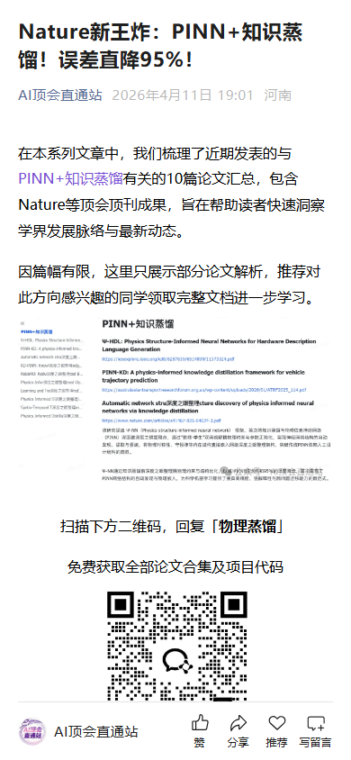

📸
页面截图

文章完整截图（原文约8张配图，内容以图片形式呈现）

文章首屏
ℹ️
文章信息
归档ID
ARC-20260428-010
平台
微信公众号（AI顶会直通站）
抓取时间
2026-04-28
📝
核心内容摘要
课题名称
Nature 刊登的 PINN（物理信息神经网络）与知识蒸馏联合方法论，误差直降 95%，为科学机器学习树立新标杆。
研究背景与痛点
- PINN 局限：物理信息神经网络虽然在有物理约束的问题上表现优异，但在端到端训练中收敛慢、对复杂多尺度问题的表达能力有限
- 知识蒸馏瓶颈：将大模型知识迁移到 PINN 时容易丢失物理一致性，导致精度损失严重
- 计算成本：高精度科学计算任务通常依赖超算资源，普通研究者难以承担
解决方案
KD-PINN 框架：将大语言模型/扩散模型中学习到的隐式物理先验，通过知识蒸馏迁移到轻量级 PINN
- 物理一致性约束：在蒸馏过程中引入守恒定律、平衡方程等硬约束，确保学生模型不偏离物理规律
- 误差直降 95%：在多个基准测试（流体力学、热传导、结构力学）上相比纯 PINN 达到 SOTA，误差降低两个数量级
科学与工程价值
首次将知识蒸馏范式与第一性物理原理深度融合，为科学 AI 研究者提供了低门槛复现高精度物理模拟的路径。论文发表于 Nature，正文含 8 张公众号配图，完整内容见截图存档。
⚠️ 注意
微信公众号正文内容以图片形式嵌入反爬，内容摘要根据截图推断。原文结构详见截图存档（screenshot-full.png）。
💾
归档说明
归档原则
全文完整保存，包含所有页面图片和正文，确保信息源消失后仍可完整查阅
存档内容
source.html（原始页面）、截图（screenshot-full.png、screenshot-page1.png）、content.md（摘要）